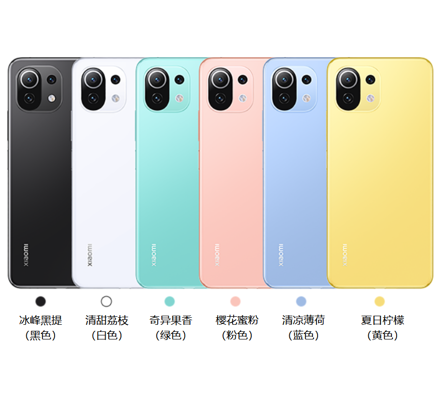

| 手机名称 | 小米11青春版 | 内存与容量 | 8GB + 256GB 最高可选 运行内存：8GB LPDDR4X 高速内存 机身存储：128GB / 256GB UFS 2.2 高速存储 |  |
| 外观尺寸 | 长度：160.53mm 宽度：75.72mm 厚度：6.81mm 重量：159g | 屏幕与指纹 | 6.55″ 柔性AMOLED 直屏 原色屏丨240Hz 采样率 尺寸：6.55英寸 分辨率：2400 x 1080 （FHD+），402ppi 显示帧率：最高 90Hz 刷新率 触控采样率：最高 240Hz 色域：DCI-P3色域 屏幕亮度: 800nit（全局亮度*） 原色屏｜对比度 5,000,000 : 1｜HDR10+｜阳光屏3.0｜10bit｜护眼阅读模式｜360°感光｜ 康宁第 6 代大猩猩玻璃® | |
| 处理器 | 骁龙780G 5G处理器 CPU 架构工艺：Kryo 670 架构，5nm EUV 工艺制程 CPU 主频：八核处理器，最高主频可达：2.4GHz 高通三丛集设计：1x2.4GHz，3x2.2GHz，4x1.9GHz GPU ：Adreno 642 图形处理器，最高频率可达 490MHz AI：第六代 AI 引擎 | 充电与电池 | 4250mAh（typ） / 4150mAh（min） 内置锂离子聚合物电池，不可拆卸 USB Type-C 双面充电接口 手机支持 QC4+ / QC3+ / PD3.0 快充协议 | |
| 影像系统 | 6400万像素超清主摄： f/1.79 超大光圈、6P 镜头 800 万超广角镜头： 119°超大广角、f/2.2 光圈、1.12μm 500 万长焦微距镜头： 2倍变焦、3cm近距离拍摄、f/2.4光圈、1.12μm 前置2000万超清相机 | |||
| 传感器 | 超声波距离传感器 | 环境光传感器 | 加速度传感器 | 陀螺仪 | 电子罗盘丨线性马达 | 红外线遥控器 | |||